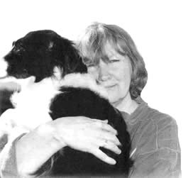

|
 Jessie Lendennie is a poet and Managing Director of Salmon Publishing, one of Ireland's leading literary publishers. She was born in Arkansas, USA and educated at King's College, London, England. She moved to Galway, Co. Galway, Ireland in 1981 and was a founder member of the Galway Writing Workshop in October of that year. She was a founding editor of 'The Salmon International Literary Journal' (1982) and co-founder of Salmon Publishing, 1985. Since 1986 she has run the press at its editor and Managing Director; commissioning, editing and publishing over 200 books; many of which were first collections from Irish women writers; a groundbreaking move in Irish poetry. She was the first Chairperson of the Poetry Co-Operative which was set up in 1983 to promote the work of local poets and bring international poets to the West of Ireland. She was co-organizer of the first Galway International Poetry Festival in 1984 and a founding member, in 1985, of the organizing committee of C˙irt, the International Literature Festival in Galway. Her poetry has been anthologized in Irish Poetry Now: Other Voices, Unveiling Treasures: The Attic Guide To The Published Works of Irish Women Literary Writers, The White Page: Twentieth Century Irish Women Poets among others. In 1990 she was nominated for a Bank of Ireland Arts Award for service to the arts in Ireland. Her prose-poem Daughter (1988, reissued 2001 as Daughter and Other Poems demonstrates her ability to write powerfully about the darkness experienced in childhood and its effects, in turn, which direct the way life and the imagination are shaped by these shadows. Lendennie is also the author of The Salmon Guide to Poetry Publishing in Ireland (1990) and The Salmon Guide to Creative Writing in Ireland (1993). Jessie Lendennie's Hompage: www.jessielendennie.com
|